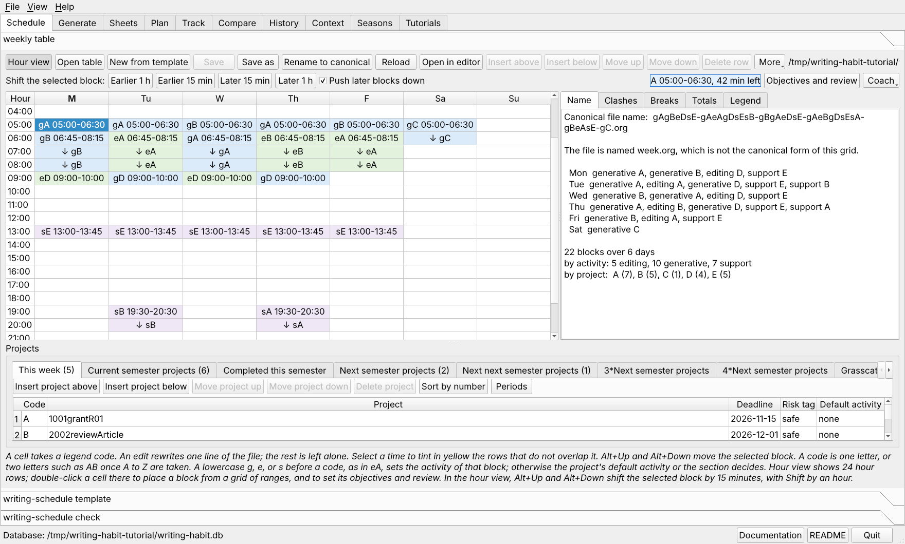
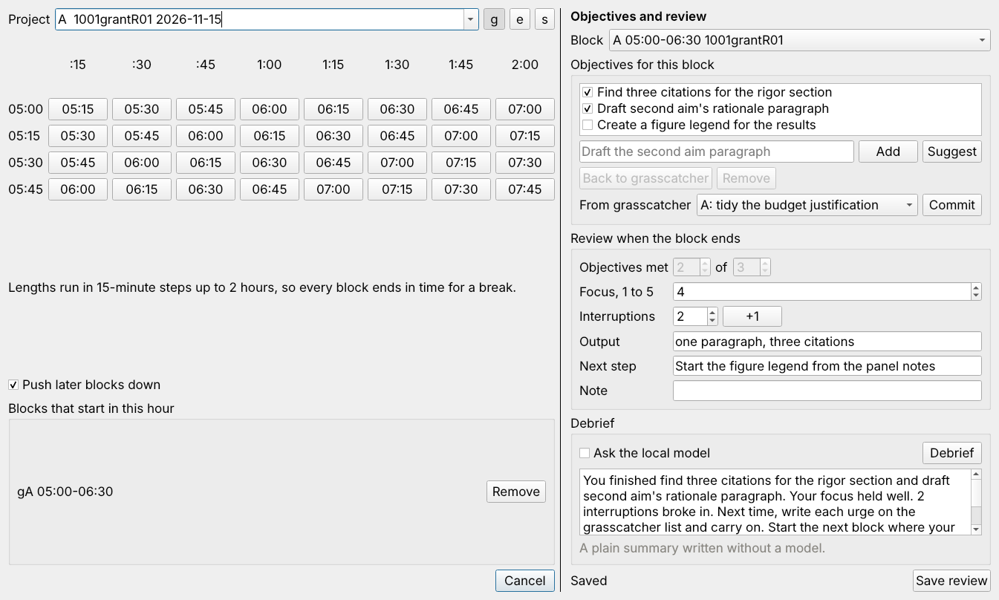
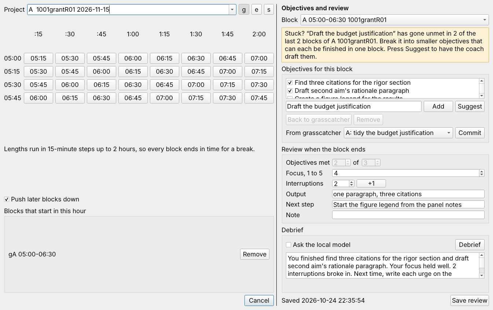
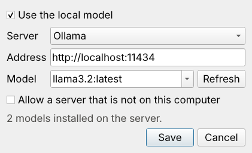
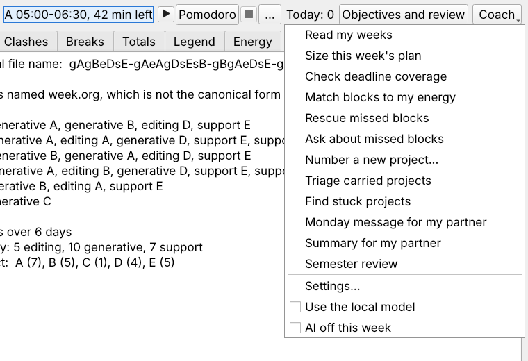
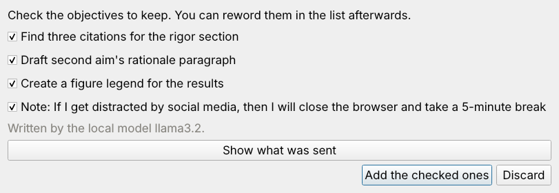
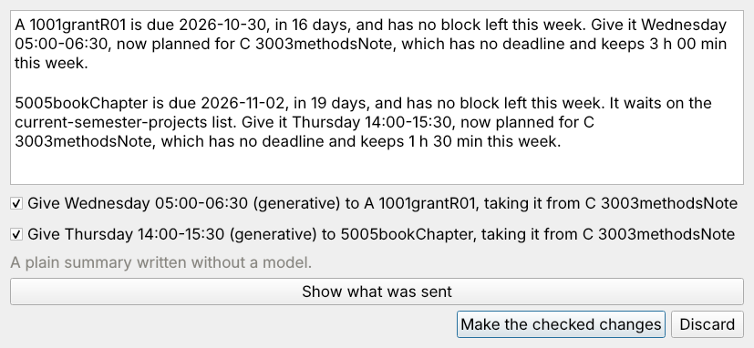
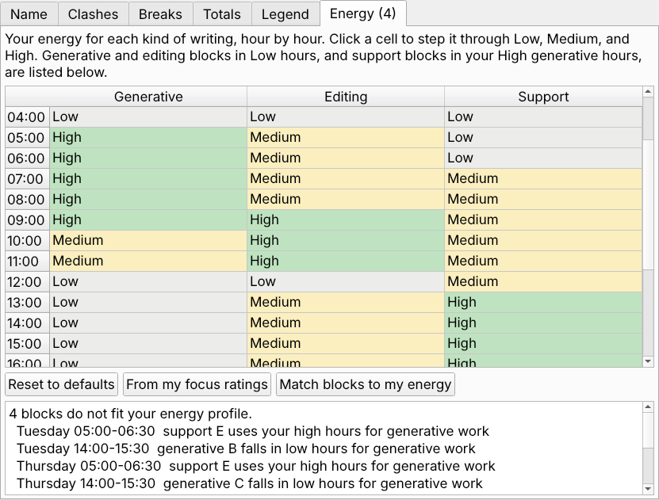
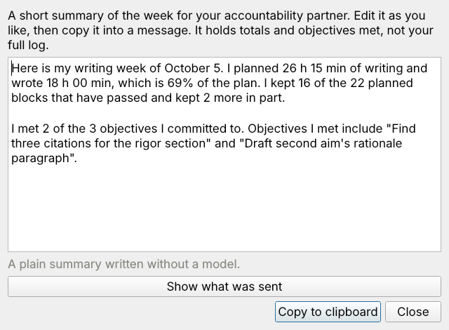
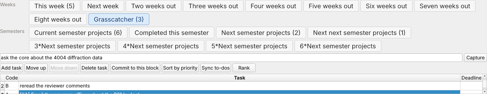

The weekly table is an org file with one row per time block and one column per day. Each cell holds a project code, optionally led by an activity letter. The legend under the grid says what each code means.
The Schedule tab with the practice week open. The legend is below the grid, and the report panels are beside it.
Oct5.org.
The tab reopens the last table at the next start.writing-schedule template 5 --style morning --out ~/org/writing-schedule/tables/Oct12.org emacs ~/org/writing-schedule/tables/Oct12.org
Click a cell and pick a code from the drop-down, or type one. A letter before the code sets the activity of that block.
| Cell | Means |
|---|---|
gA | generative work on project A |
eA | editing work on project A |
sA | support work on project A |
A | project A, with the project's default activity from the legend |
g3 | generative work on project 3, a digit code |
The buttons above the grid insert, move, and delete rows. A new row offers a start time and a length, so the time column stays sorted.
Press Hour view to see the week as 24 hour rows. Double-click a cell to open the range picker. Choose the project and click an end time in the grid. The rows of the grid are the starts at :00, :15, :30, and :45, and the columns are lengths from 15 minutes to two hours. One click places the block, and the range you used last for that project is the default.
The Breaks panel lists any run of blocks longer than two hours with no 15-minute break, and tints those cells amber.

The hour view with Monday's A block selected. The second bar shifts the selected block, counts down the block under way, and holds the coach.
Select a block in the hour view, then press Earlier 1 h, Earlier 15 min, Later 15 min, or Later 1 h. Alt+Up and Alt+Down shift by 15 minutes, and Alt+Shift+Up and Alt+Shift+Down by an hour. With Push later blocks down checked, a later block that the moved block overlaps moves down to start where it ends, so placing a two-hour block at 03:00 moves a 04:00 block to 05:00 instead of deleting it.
The block timer button beside the coach shows the time left in the block under way, such as A 05:00-06:30, 42 min left. It turns orange in the last five minutes. For fifteen minutes after a block ends it reads A block ended. Review it, and pressing it opens that block's review. Between blocks it names the next one, and pressing it selects that block. It counts only the week of the open table, and it never sounds an alarm.

The picker with the review panel. Two of three objectives are met, and the debrief below was written as a plain summary, with the model off.

The budget justification went unmet in two earlier blocks of the grant, so the panel offers it to Suggest.
Objectives and reviews live in the habit database chosen in the Plan and Track forms, keyed by the block's day, start, and project code. Track sync never writes them, and a shifted block takes them along.
The coach can use a language model that runs on your own computer. Nothing leaves the computer, and every coach button also works without a model.
ollama pull llama3.2 ollama list

Coach settings with the two models a server reported. Refresh asks the server again.

The Coach menu. Use the local model is the same switch as Ask the local model in the review panel.

Objectives and an if-then plan drafted by llama3.2 in a trial run.
After the review, press Debrief. With the model on, it writes three or four sentences that lead with what you finished, name one obstacle at most, and suggest a first step for next time. With the model off, the panel writes a plain summary from your review. The debrief is saved with the review.
ai_log table in the habit database,
with the facts sent and the reply.The Coach menu also has Read my weeks, which names the two strongest patterns in how you keep your plan, and Size this week's plan, which suggests a plan size from the minutes you actually wrote in recent weeks like this one.
On Monday, choose Coach > Check deadline coverage. It finds the projects due in the next four weeks, from the legend and the semester lists, that have no block left this week, and proposes a block to give each one. The block comes from a project with no near deadline and keeps its time and its activity. Check the proposals to keep and press Make the checked changes.

Two projects due soon have no time left this week, so the check offers each a block from the methods note, which has no deadline.
The Energy tab beside the Legend panel holds your energy for generative writing, editing, and support tasks, hour by hour. Click a cell to step it through Low, Medium, and High, or press From my focus ratings to set it from your reviews. The list under the grid names generative and editing blocks that fall in Low hours, and support blocks that use your best generative hours. Match blocks to my energy proposes swaps of two blocks of the same length on the same day, so every project keeps its time.

The Energy tab with the default profile. Email in the early morning and new writing after lunch do not fit.
Coach > Rescue missed blocks finds blocks that passed with nothing tracked. It offers a make-up slot, in hours that suit the work and with your breaks kept, for at most two demanding blocks a week, and it lets support blocks and blocks with no good slot go.
Coach > Number a new project... asks for a working name and suggests a free four-digit number beside the related projects, found from your numbered project folders. It can add the new project to the current semester list.
After a roll forward, press Triage... on the Carried over tab. Each carried project gets a suggestion to keep, defer to the next period, or drop, from the minutes logged for it in the last four weeks, the last week it was worked, and its deadline. Only the suggestions you check are applied, and a dropped project leaves the lists only. Its folder and history stay.
Before you roll the lists forward, choose Coach > Semester review. It drafts two short paragraphs for your annual faculty report from the habit database: the time planned and written, the months you kept the most and the least of the plan, the projects that took the time, the projects completed, and objectives you met. Edit it and copy it into the report.
On Friday, choose Coach > Ask about missed blocks. Each missed block gets one question, such as what took the Tuesday morning slot, and you answer in a sentence. The answers are saved in the habit database. The coach only asks, because only you know the reasons.
Coach > Monday message for my partner drafts a short message from the open week: the hours planned, the main projects, and the one with the nearest deadline. Edit it and copy it into a message.
A plan someone else knows about is harder to break. On Friday, choose Coach > Summary for my partner. The coach drafts a short message, written as you, with the time you planned and wrote, the share of the plan kept, the blocks kept, and the objectives you met. Edit it, press Copy to clipboard, and paste it into an email or a chat. Nothing is sent for you, and the message holds totals and finished objectives, never your full log.

The summary of the tutorial week, written without a model. Show what was sent lists the numbers it was built from.
Each legend row has five columns.

| Column | What to enter |
|---|---|
| Code | A capital letter or a single digit 0 to 9. New projects get A to Z first, then 0 to 9, then AA, AB, and so on. Only the 36 one-character codes can appear in a table's file name. |
| Project | The project directory name, such as 1001grantR01. Begin with the four-digit project number, because the sync matches tracker rows by that number. |
| Deadline | A date written YYYY-MM-DD, or empty. Anything else is refused. |
| Risk tag | safe, risky, or none. The dashboard compares the two classes. |
| Default activity | The activity a bare code takes, for example support for email. |
In the file the deadline follows the project name, as in
A: 1001grantR01 2026-11-15 :safe:.
An older legend with free text such as B: 1006AIrxOpt, NSF Dec 15
can be cleaned up with More > Split legend into project and deadline.
The dialog lists every change and any text it would drop. Nothing is written until you save.
The legend should name only the projects of this week. The projects you mean to work on this semester, and those that wait for later, live in six lists on the tabs beside the legend. Each tab shows its number of projects in parentheses.

| Tab | Holds |
|---|---|
| This week | The legend, which lists the projects scheduled this week. Only these can go in the grid. |
| Current semester projects | Every writing project of this semester. The sync counts time on these even in a week they are not scheduled. |
| Completed this semester | Projects finished this semester, kept as a record. The sync still counts late time on them. Mark completed on the current list moves the selected project here. |
| Next semester projects | Projects that start next semester. |
| Next next semester projects | Projects that start the semester after. |
| 3*Next semester projects | Projects that start three semesters ahead. |
| 4*Next semester projects | Projects that start four semesters ahead. |
| 5*Next semester projects | Projects that start five semesters ahead. |
| 6*Next semester projects | Projects that start six semesters ahead, about two years out. |
Each list has the legend's columns. A project with no code yet shows an empty Code cell. The buttons add, move, and delete projects. Sort by number orders the projects by the four-digit number that starts each name, with unnumbered projects such as email last. The legend tab has the same button. Copy to this week's legend brings the selected project into the week, keeping its code when the legend does not use it yet.
In the file each list is a small table after the weekly table, named by an org line. A row has the legend's form, and a dash stands for a missing code.
#+NAME: current-semester-projects | B: 1006AIrxOpt 2026-12-15 :safe: | | X: 0374qflip 2026-11-21 :risky: | #+NAME: next-semester-projects | - 1002RNAeditingR01 2027-02-05 :safe: |
The schedule generator reads only the first table, so the lists never reach the plan, the calendar, or the sheets. New from template carries the lists of the open table into the new week.
Type in the Find box above the project tabs. Press Ctrl+F to put the cursor there; on a Mac either Command+F or Control+F works. A word matches any project or task whose name holds it, and a legend code such as AB matches that project. Every tab shows only its matching rows, its title gives the count, and the matching projects' blocks turn blue in the grid. Enter or the Find next button goes to the next tab with a match, and Esc clears the box.
Type or dictate a stray thought in the box at the top of the Grasscatcher tab, or press Ctrl+Shift+G (Command+Shift+G on a Mac), and press Enter. The task lands at the end of the list with its project's code when your words name the project by its code, number, or name, and with a priority when you say one, as in priority A.

The first thought is filed as an A task with priority A. The second is waiting in the box.
Each task also keeps its project's four-digit number after the code, as in
1: 0142 Read the reviews. The number stays with the project when the
code changes from week to week, so a carried task always finds its project.
A task may start with a priority cookie such as [#A],
[#A1], or [#2]. Sort by priority orders them.
Sync to-dos compares the grasscatcher with the headings under
* Project TODOS in each project's log, found as
~/0142RETKinaseCovalentInhibitors/log0142.org for a legend entry
named 0142RETKinaseCovalentInhibitors. Open to-dos come to the grasscatcher,
new tasks go to the log as TODO headings, and tasks marked DONE in the log leave
the grasscatcher. The changes are shown first.
* Project TODOS ** TODO [#A1] Read the key review articles on covalent docking. ** DONE [#B] Measure the cysteine distances in 7JU6
Press Periods on the This week tab and enter your semesters, or use
Fill a year. The tabs then read Fall 2026 projects,
Spring 2027 projects, and so on. The calendar is an org table in
periods.org beside the tables.
When a new semester starts, a banner offers Roll forward. Completed
projects go to completed.org. The current list goes to
Carried over, where Move to current list keeps a project and
Delete project drops it. Every later list moves one semester nearer.
The panels beside the grid update as you type.
writing-schedule check ~/org/writing-schedule/tables/Oct5.org writing-habit name 4gAAeAsA-gWW --table ~/org/writing-schedule/tables/Oct5.org
Press Save. Each edit rewrites only the line it touched, so the rest of the file stays as you wrote it. Open in editor hands the file to Emacs, and the tab reloads it when you return.
Next, import the plan.